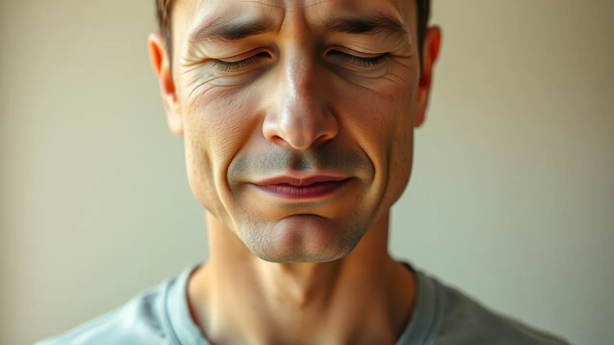

You don't need expensive supplements or prescription medication to reduce stress naturally. Your body already has built-in tools to calm your nervous system, and you can activate them within minutes using simple, science-backed techniques.
Stress is your body's alarm bell. When your brain perceives a threat, it floods your bloodstream with cortisol and adrenaline, preparing you to fight or flee. The problem is your nervous system can't tell the difference between a real tiger and an angry email from your boss. Learning how to reset this response is the real skill.
The good news: natural stress relief methods work fast, cost nothing, and you can practice them right now in your own home. This article walks you through five proven techniques that actually stick.
How to reduce stress naturally involves breathing exercises, movement, grounding techniques, sleep optimization, and herbal support. These science-backed natural stress relief methods activate your parasympathetic nervous system within minutes, helping you regain calm without medication.
What Is Stress and Why Your Body Gets Stuck in Fight-or-Flight Mode
Stress is your nervous system's defensive reaction to perceived danger. When you face a deadline, conflict, or even just bad news, your amygdala (your brain's threat detector) triggers the release of stress hormones that physically prepare you to survive.
Here's the problem: 77% of people regularly experience physical symptoms caused by stress, according to the American Psychological Association. Your body doesn't distinguish between a physical threat and an emotional one, so chronic worry keeps your nervous system locked in high alert.
To reduce stress naturally, you first need to understand that your nervous system has two main modes: the sympathetic nervous system (fight-or-flight) and the parasympathetic nervous system (rest-and-digest). Most stressed people spend too much time in sympathetic mode. The solution is learning to deliberately flip the switch back to parasympathetic mode using natural techniques.
- Chronic stress elevates cortisol for 12+ hours after a stressful event
- Your parasympathetic nervous system can be activated in as little as 2 minutes
- Natural stress relief methods train your body to recover faster over time
Action: Start noticing which situations trigger your stress response. Don't judge it; just observe it. This awareness is your foundation for using natural stress relief methods effectively.
What Are the Physical Signs You Need Natural Stress Relief Right Now
Your body sends clear signals when stress is taking over. Most people ignore these signs until they're completely burned out. Learning to recognize them early helps you intervene with natural stress relief methods before things escalate.
Research shows that 43% of people with unmanaged stress develop tension headaches, jaw clenching, and muscle tightness. Additionally, stress disrupts sleep, digestion, and immune function. These aren't separate problems; they're all connected to your nervous system being stuck in fight-or-flight.
The physical signs you need to reduce stress naturally include racing heart, shallow breathing, digestive issues, insomnia, and that heavy feeling in your chest. Mental signs include racing thoughts, difficulty focusing, and feeling overwhelmed by simple tasks. Recognizing these signals is your green light to use the natural stress relief techniques in this article.
- Tension in your neck, shoulders, and jaw
- Difficulty falling asleep or waking up multiple times per night
- Appetite changes (eating too much or too little)
- Constant fatigue even after sleeping
- Brain fog and difficulty making decisions
Action: Notice one physical sign today and commit to using one natural stress relief technique this week. Your body is trying to tell you something; listen to it.
Why Does Chronic Stress Happen and How Habits Make It Worse
Chronic stress develops when you're repeatedly exposed to stressors without proper recovery. Your nervous system adapts by staying in high-alert mode permanently, which means it takes increasingly intense signals to calm you down. This is why people who don't reduce stress naturally often need bigger and bigger jolts (coffee, shopping, scrolling) to feel normal.
Studies show that 80% of workers feel stressed on the job, yet only 21% use natural stress relief methods to manage it. Most people rely on unhealthy coping mechanisms like overeating, drinking, or numbing with screens. These feel good temporarily but actually deepen the stress cycle because they prevent your nervous system from truly recovering.
The habits that make stress worse include irregular sleep, skipping meals, excessive caffeine, avoiding movement, and chronic rumination. Each of these prevents your parasympathetic nervous system from engaging. When you learn how to reduce stress naturally, you're literally rewiring your nervous system's default settings.
- Your nervous system can become habituated to stress, making calm feel unfamiliar
- Avoidance coping (distraction) prevents real recovery and compounds future stress
- Sleep deprivation alone increases cortisol by 40%, amplifying stress response
Action: Identify one habit that's preventing you from reducing stress naturally. You don't need to fix everything today; just pick one small change for this week.

How to Reduce Stress Naturally: Five Evidence-Based Techniques You Can Use Today
These five natural stress relief methods are backed by neuroscience and psychology research. They work by directly stimulating your parasympathetic nervous system, which is your body's built-in stress-relief system. The best part: you can use all of them at home, right now.
The techniques below activate your vagus nerve, which controls your parasympathetic nervous system. When stimulated, your vagus nerve sends signals that lower heart rate, reduce cortisol, and shift you into a calm state within minutes. This isn't meditation; these are direct physiological interventions.
1. Box Breathing: The 4-4-4-4 Reset (2 minutes)
Box breathing is the fastest way to reduce stress naturally because it directly calms your nervous system. Breathe in for 4 counts, hold for 4, exhale for 4, hold for 4. Repeat 5-10 times. The extended exhale activates your vagus nerve, signaling safety to your brain.
Research in the Journal of Alternative and Complementary Medicine shows that controlled breathing reduces cortisol by 25% in just 5 minutes. This is why military and emergency responders use this technique.
Action: Do box breathing right now for just 2 minutes. Notice the shift in your body. This is what safe feels like.
2. Cold Water Immersion: The 30-Second Shock (activation phase)
Splashing cold water on your face or dunking your hands in cold water for 30 seconds triggers the dive reflex, which immediately lowers heart rate and blood pressure. This is one of the fastest natural stress relief methods because it overrides the fight-or-flight response.
A study in Stress Medicine found that cold water immersion reduced anxiety symptoms by 50% in acute stress situations. It's especially helpful when you need to reduce stress quickly at home and feel trapped in panic.
Action: Fill a bowl with cold water and ice, take a breath, and hold your face in it for 15-30 seconds. Your nervous system will immediately shift.
3. Progressive Muscle Relaxation: Release Tension in 10 Minutes
Stress causes you to unconsciously tense your muscles. Progressive muscle relaxation breaks this cycle by deliberately tensing then releasing each muscle group. This signals safety to your nervous system.
Research in the Anxiety Disorders Review shows that PMR reduces muscle tension, blood pressure, and cortisol levels. It's one of the most accessible natural stress relief methods because you don't need any equipment.
- Start with your toes: tense for 5 seconds, release for 10 seconds
- Move up through your calves, thighs, glutes, stomach, chest, shoulders, arms, and face
- Notice the contrast between tension and relaxation
Action: Do a 10-minute progressive muscle relaxation session tonight. Your body will feel heavy and grounded afterward.
4. Grounding Technique: The 5-4-3-2-1 Sensory Method (5 minutes)
When stress pulls you into anxious thoughts about the future, grounding brings you back to the present moment. Name 5 things you see, 4 things you can touch, 3 things you hear, 2 things you smell, 1 thing you taste. This is one of the simplest natural stress relief methods for managing racing thoughts.
Grounding works because it shifts your attention from your stressed nervous system to your actual environment. Your brain can't fully focus on anxiety while it's processing sensory details.
Action: Try the 5-4-3-2-1 technique right now. Go slowly through each sense. This is especially helpful when you feel overwhelmed.
5. Herbal Support: Adaptogens That Reduce Stress Naturally
While lifestyle techniques are primary, certain herbs support your nervous system. Ashwagandha, L-theanine, passionflower, and chamomile have clinical evidence for reducing anxiety and cortisol. These are natural stress relief options that work synergistically with breathing and movement.
A study in the Journal of Clinical Psychiatry found that ashwagandha reduced cortisol by 28% and anxiety by 56% over 60 days. These work best as part of a comprehensive approach, not as standalone solutions.
- Ashwagandha: 300-600mg daily, reduces cortisol
- L-theanine: 100-200mg, promotes relaxation without drowsiness
- Chamomile tea: natural stress relief that also improves sleep
Action: Choose one herbal option and commit to it for 30 days. Most adaptogens build effectiveness over time, not immediately.
How to Build Daily Habits That Reduce Stress Naturally Long-Term
Single techniques help in the moment, but lasting stress reduction comes from building daily habits that keep your nervous system in balance. Think of it like brushing your teeth: consistent small actions prevent bigger problems.
Research in Psychoneuroendocrinology shows that people who practice daily stress-management habits have 23% lower cortisol levels overall and recover from stressful events 40% faster. These aren't people who meditate for an hour; they're people with small, consistent practices.
The most effective approach is stacking: choosing one technique from this article and practicing it at the same time every day for 21 days until it becomes automatic. Then add a second technique. This is how you reprogram your nervous system's default response.
- Morning routine: box breathing + 10-minute walk = parasympathetic activation before stress starts
- Midday reset: 5-minute progressive muscle relaxation when you feel tension rising
- Evening wind-down: herbal tea + grounding technique + 7-9 hours sleep
- Weekly checkpoint: notice which techniques work best for you and double down
Action: Choose one time of day (morning, midday, or evening) to practice one natural stress relief technique for the next 21 days. Mark it on your calendar. Small consistency beats occasional intensity.
The most important habit is sleep. When you get 7-9 hours, your stress resilience increases dramatically. Quality sleep is the foundation that makes all other natural stress relief methods more effective. Prioritize this above everything else.
What Does This Look Like in Real Life?
Sarah spent three years living in constant panic. Her shoulders were permanently tight, she couldn't sleep without wine, and her brain felt like it was running 100 browser tabs at once. She'd tried meditation apps and yoga classes but quit because they felt too slow. She wanted results now, not someday. Then her therapist taught her box breathing. Within a week of doing it every morning, her sleep improved. Two weeks in, she noticed her shoulders actually dropped from their stressed position. By week three, she realized she hadn't needed wine to sleep. She wasn't 'fixed,' but her nervous system had finally gotten the message that she was safe.
A year later, Sarah practices box breathing every morning (2 minutes), does progressive muscle relaxation three times a week, and takes ashwagandha. She's not meditating for an hour or completely stress-free. But she's no longer trapped in fight-or-flight. She recognizes her stress signals early and can calm herself down instead of spiraling. The natural stress relief methods saved her life not because they were complicated, but because she started small and stayed consistent. That's the real transformation.
Related Articles
- → how your thoughts spiral into anxiety
- → signs you're experiencing nervous system overload
- → proven methods for calming panic quickly
- → stop your racing mind at bedtime
- → 5 Ways to Relax Your Mind Fast: The Science-Backed Method That Actually Works
- → 5 Ways to Deal with Anxiety Daily: Your Realistic Recovery Plan
- → 5 Ways to Stop Anxiety Attacks Before They Take Over Your Day
- → 5 Ways to Control Your Thoughts: Stop the Mental Chaos Today
- → 5 Ways to Stop Worrying: Reclaim Your Peace Starting Today
- → 5 Ways to Improve Mental Clarity: Stop Brain Fog and Think Sharp Again
- → 5 Ways to Feel Calm Instantly: Stop Stress Before It Stops You
- → 7 Ways to Feel Happy Again: Reclaim Your Joy Starting Today
- → 5 Ways to Stop Overthinking at Work: Reclaim Your Focus and Peace
Frequently Asked Questions
Where to Go From Here
You now have five proven, natural stress relief methods backed by science. Box breathing, cold water, progressive muscle relaxation, grounding, and herbal support all work through the same principle: they activate your parasympathetic nervous system and signal safety to your brain.
The secret isn't finding the perfect technique; it's choosing one and practicing it consistently. Start today with just 2 minutes of box breathing or one cold-water reset. That single action rewires your nervous system's default response. Within a week, you'll notice the shift. Within a month, it becomes automatic.
Your stress is real, but your ability to reduce it naturally is real too. Start now, start small, and let your body remember what calm feels like.